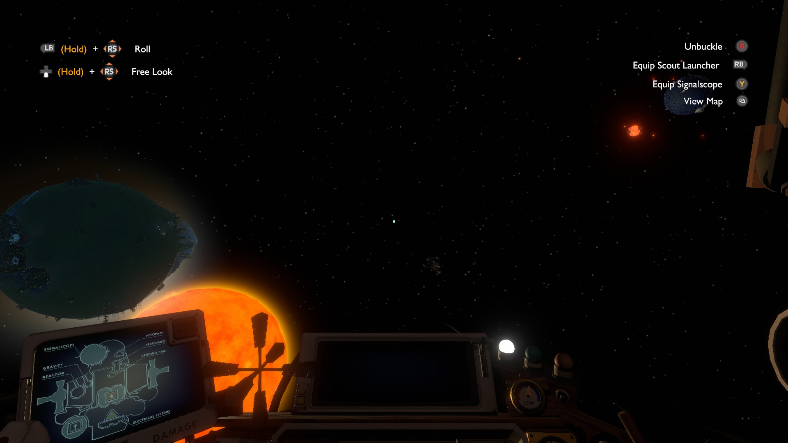
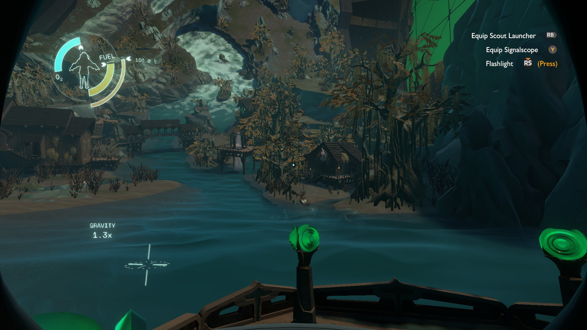

Epiphany Games
Sometimes I'll come across a game that's hard to find information for, because the reviews say "don't read anything about this game, just play it!" or they're just big walls of spoiler tags. This is a sign that the game is what I call an epiphany-driven game. These games reward curiosity with paradigm-shifting moments of understanding. In my opinion, these are some of the most fun, satisfying games in existence, but they can only be played once! For that reason, I am always seeking more.
Like many others, my Epiphany Game addiction started with Outer Wilds. This game is simultaneously genre-defining and unique. A search for "games like Outer Wilds" finds dozens of posts from other players feeling a bit empty after completing the game or its DLC. There really is nothing quite like Outer Wilds, but there are games that are fun for some of the same reasons. The core elements of an Epiphany Game are:
- A universe with a cohesive story or set of rules that are initially unknown
- The rules of the universe must be discovered through self-driven exploration
I have also seen the term "Metroidbrainia", which describes a game where the unlocks are simply player knowledge rather than in-game items and abilities, but I find that this term excludes too many games that evoke the same core feelings as Outer Wilds. For example, I find that Subnautica feels similar to Outer Wilds, even though it has little to no knowledge gating at all.
There is overlap between Epiphany Games and normal puzzle games, as puzzle games also require the player to understand the problem to find solutions. The difference is that the eureka moments in puzzle games are typically limited to one immediate problem, rather than a world-spanning problem. That said, some puzzle games are indeed also Epiphany Games! Thinky Games' "Thinky Essentials" includes many Epiphany Games.
Here is a list of Epiphany Games I've played. I like tier lists, so I've sorted them into tiers. The tier criteria is some vibes-based combination of how much I think the games fit the category, and how much I liked the game.
Outer Wilds

Fly around in space and explore the ruins of a lost civilization and discover the nature of the universe. The quintessential example of a curiosity-driven game.
- Overall Score
- 9.5/10
- Epiphany Strength
- 10/10
- Length
- 20 hours
This is the game that defines the genre. Outer Wilds is the most pure example of an epiphany-driven game. It has no combat system, no stats, no unlockable items. The only thing stopping the player from beating the game within 10 minutes of booting it up is a lack of knowledge. Outer Wilds is the one true example of a "Metroidbrainia" - the only thing you unlock is knowledge.
The universe just exists, and you have to figure out how it works.
Even though it's one of my favorite games, it has a flaw, which is the puzzles. Some of the puzzles may remain unsolved even when the player is doing basically the correct thing, which may lead the player to waste time trying obscure solutions. One of the final puzzles is simultaneously too easy and too hard - it is possible to solve accidentally, which will reveal the entire plot and ruins the game, but the correct solution is also somewhat illogically nitpicky, and the player may decide
- Excellent epiphanies
- Cohesive universe with no plotholes. By the end, it all makes sense
- Space! Planets!
- Sometimes very scary
- Difficult controls are a skill to be learned and may inhibit progress
- Some poorly designed puzzles
Outer Wilds: Echoes of the Eye

Raft around and explore the ruins of another lost civilization and discover the meaning of it all once again. Just as good as the base game.
- Overall Score
- 10/10
- Epiphany Strength
- 10/10
- Complete Length
- 20 hours
This isn't merely a DLC, it's an entirely new game within the original. That's why it gets listed separately. I'm in the minority, but I loved the Outer Wilds DLC more than the base game. The epiphanies are just as good, and the puzzles are more well-designed.
A major reason people may enjoy it less than the original is because it leans harder into the horror aspects. I like the horror aspects, which explains why I liked the DLC.
- Cohesive universe with few plotholes
- Still excellent epiphanies
- Better puzzles than the base game
- Scarier than the base game
- Less space travel
- Attachment to the base game results in repeated downtime
EMUUROM

Scan all objects and find all secret paths. Not so much about solving puzzles.
- Epiphany Score
- 5
- Overall Score
- 6
- Completionist Length
- 40 hours
EMUUROM asks the player to explore every detail of the world to find all its secrets. The problem is, the level design and game mechanics are not fun by themselves.
EMUUROM is a time-consuming scavenger hunt. There are a couple epiphany moments. One in particular was really cool.
Like many games of its type, EMUUROM features a secret writing system. However, the language encoded is not English, but rather a particular dialect of Finnish, spelled phonetically. Google translate struggles, even when the messages are perfectly deciphered. The messages are not used for that many secrets, anyway, so the whole secret language thing was a disappointment.
- Multiple layers
- Completionist scavenger hunt
- Confusing navigation
- Bad physics